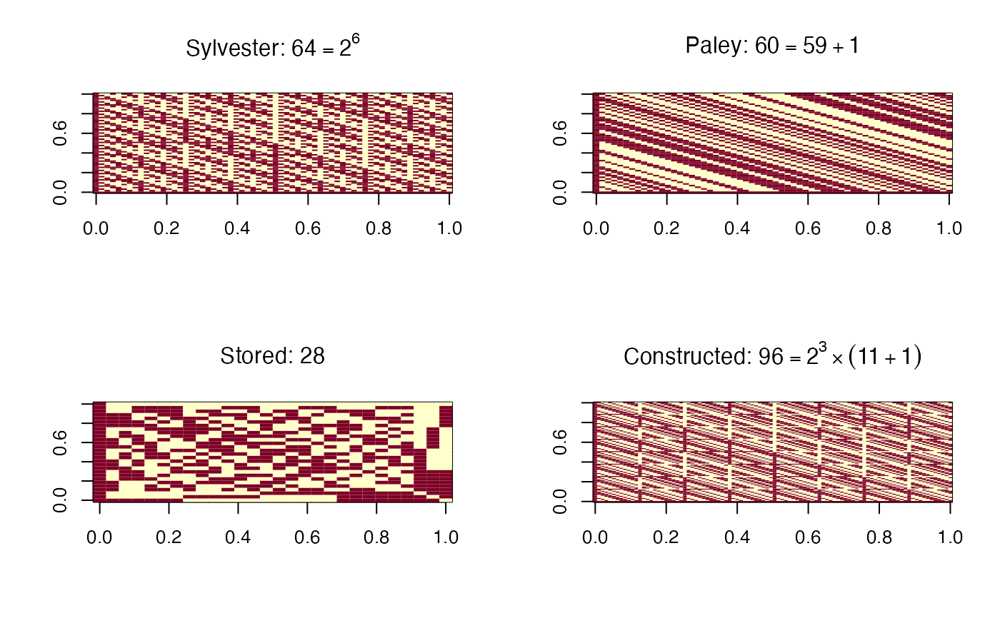
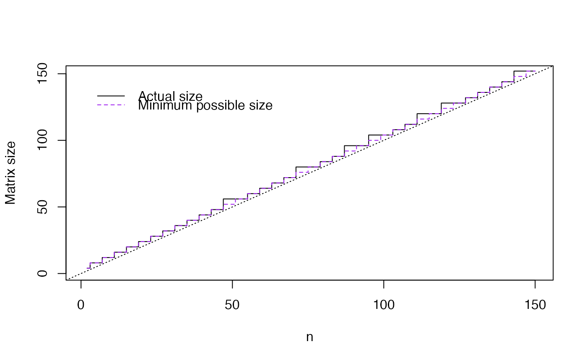

hadamard.RdReturns a Hadamard matrix of dimension larger than the argument.
hadamard(n)lower bound for size
A Hadamard matrix
For most n the matrix comes from paley. The
\(36\times 36\) matrix is from Plackett and Burman (1946)
and the \(28\times 28\) is from Sloane's library of Hadamard
matrices.
Matrices of dimension every multiple of 4 are thought to exist, but this function doesn't know about all of them, so it will sometimes return matrices that are larger than necessary. The excess is at most 4 for \(n<180\) and at most 5% for \(n>100\).
Strictly speaking, a Hadamard matrix has entries +1 and -1 rather
than 1 and 0, so 2*hadamard(n)-1 is a Hadamard matrix
Sloane NJA. A Library of Hadamard Matrices http://neilsloane.com/hadamard/
Plackett RL, Burman JP. (1946) The Design of Optimum Multifactorial Experiments Biometrika, Vol. 33, No. 4 pp. 305-325
Cameron PJ (2005) Hadamard Matrices http://designtheory.org/library/encyc/topics/had.pdf. In: The Encyclopedia of Design Theory http://designtheory.org/library/encyc/
par(mfrow=c(2,2))
## Sylvester-type
image(hadamard(63),main=quote("Sylvester: "*64==2^6))
## Paley-type
image(hadamard(59),main=quote("Paley: "*60==59+1))
## from NJ Sloane's library
image(hadamard(27),main=quote("Stored: "*28))
## For n=90 we get 96 rather than the minimum possible size, 92.
image(hadamard(90),main=quote("Constructed: "*96==2^3%*%(11+1)))

par(mfrow=c(1,1))
plot(2:150,sapply(2:150,function(i) ncol(hadamard(i))),type="S",
ylab="Matrix size",xlab="n",xlim=c(1,150),ylim=c(1,150))
abline(0,1,lty=3)
lines(2:150, 2:150-(2:150 %% 4)+4,col="purple",type="S",lty=2)
legend(c(x=10,y=140),legend=c("Actual size","Minimum possible size"),
col=c("black","purple"),bty="n",lty=c(1,2))
